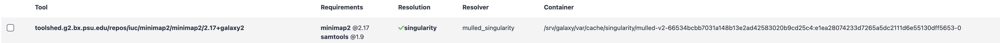

Use Apptainer containers for running Galaxy jobs
| Author(s) |
|
| Reviewers |
|
OverviewQuestions:
Objectives:
Requirements:
Configure your Galaxy to use Apptainer and BioContainers for running jobs
- slides Slides: Ansible
- tutorial Hands-on: Ansible
- slides Slides: Galaxy Installation with Ansible
- tutorial Hands-on: Galaxy Installation with Ansible
Time estimation: 1 hourSupporting Materials:Published: Jan 8, 2021Last modification: Jun 14, 2024License: Tutorial Content is licensed under Creative Commons Attribution 4.0 International License. The GTN Framework is licensed under MITpurl PURL: https://gxy.io/GTN:T00323rating Rating: 4.0 (1 recent ratings, 15 all time)version Revision: 11
In this tutorial you will learn how to configure Galaxy to run jobs using Apptainer containers provided by the BioContainers community. Make sure to read the documentation on container in Galaxy and in particular container resolvers in Galaxy.
Background
BioContainers is a community-driven project that provides the infrastructure and basic guidelines to create, manage and distribute bioinformatics packages (e.g Conda) and containers (e.g Docker, Apptainer). BioContainers is based on the popular frameworks Conda, Docker and Apptainer.
Apptainer is an alternative to Docker that is much friendlier for HPCs
Comment: Apptainer, Singularity, SingularityCE?
Name Singularity SingularityCE Apptainer Origin Original name, used by the project until 2021 Name of Sylabs’ Fork (CE for Community Edition) Name change when the project joined the Linux Foundation Status renamed in 2021 currently active currently active RPM Package available discontinued ❌ ✅ CLI name singularitysingularityapptainerorsingularityMany people still know Apptainer under its former name, Singularity. Singularity was forked in 2021, with the non-commercial fork being renamed to Apptainer and joining the Linux Foundation. Sylabs maintains their own free and open source fork, ‘SingularityCE’ (for Community Edition), as well as a commercial version, ‘SingularityPRO’.
We will use the Name Apptainer for our training material, because most rpm packages are now named Apptainer.
Apptainer is a container platform. It allows you to create and run containers that package up pieces of software in a way that is portable and reproducible.
Agenda
Comment: Galaxy Admin Training PathThe yearly Galaxy Admin Training follows a specific ordering of tutorials. Use this timeline to help keep track of where you are in Galaxy Admin Training.
Installing Apptainer
First, we will install Apptainer using Ansible. Since there is a package available for major Linux distros now, we could simply install it in the pre tasks. However, we would have to enable additional repos, so we decided to create a role for this:
Hands-on: Installing Apptainer with Ansible
In your working directory, add the Apptainer role to your
requirements.ymlfile:--- a/requirements.yml +++ b/requirements.yml @@ -20,3 +20,6 @@ # CVMFS Support - src: galaxyproject.cvmfs version: 0.2.21 +# Singularity/Apptainer +- src: usegalaxy_eu.apptainer + version: 0.0.1If you haven’t worked with diffs before, this can be something quite new or different.
If we have two files, let’s say a grocery list, in two files. We’ll call them ‘a’ and ‘b’.
Input: Old$ cat old
🍎
🍐
🍊
🍋
🍒
🥑Output: New$ cat new
🍎
🍐
🍊
🍋
🍍
🥑We can see that they have some different entries. We’ve removed 🍒 because they’re awful, and replaced them with an 🍍
Diff lets us compare these files
$ diff old new
5c5
< 🍒
---
> 🍍Here we see that 🍒 is only in a, and 🍍 is only in b. But otherwise the files are identical.
There are a couple different formats to diffs, one is the ‘unified diff’
$ diff -U2 old new
--- old 2022-02-16 14:06:19.697132568 +0100
+++ new 2022-02-16 14:06:36.340962616 +0100
@@ -3,4 +3,4 @@
🍊
🍋
-🍒
+🍍
🥑This is basically what you see in the training materials which gives you a lot of context about the changes:
--- oldis the ‘old’ file in our view+++ newis the ‘new’ file- @@ these lines tell us where the change occurs and how many lines are added or removed.
- Lines starting with a - are removed from our ‘new’ file
- Lines with a + have been added.
So when you go to apply these diffs to your files in the training:
- Ignore the header
- Remove lines starting with - from your file
- Add lines starting with + to your file
The other lines (🍊/🍋 and 🥑) above just provide “context”, they help you know where a change belongs in a file, but should not be edited when you’re making the above change. Given the above diff, you would find a line with a 🍒, and replace it with a 🍍
Added & Removed Lines
Removals are very easy to spot, we just have removed lines
--- old 2022-02-16 14:06:19.697132568 +0100
+++ new 2022-02-16 14:10:14.370722802 +0100
@@ -4,3 +4,2 @@
🍋
🍒
-🥑And additions likewise are very easy, just add a new line, between the other lines in your file.
--- old 2022-02-16 14:06:19.697132568 +0100
+++ new 2022-02-16 14:11:11.422135393 +0100
@@ -1,3 +1,4 @@
🍎
+🍍
🍐
🍊Completely new files
Completely new files look a bit different, there the “old” file is
/dev/null, the empty file in a Linux machine.$ diff -U2 /dev/null old
--- /dev/null 2022-02-15 11:47:16.100000270 +0100
+++ old 2022-02-16 14:06:19.697132568 +0100
@@ -0,0 +1,6 @@
+🍎
+🍐
+🍊
+🍋
+🍒
+🥑And removed files are similar, except with the new file being /dev/null
--- old 2022-02-16 14:06:19.697132568 +0100
+++ /dev/null 2022-02-15 11:47:16.100000270 +0100
@@ -1,6 +0,0 @@
-🍎
-🍐
-🍊
-🍋
-🍒
-🥑Install the requirements with
ansible-galaxy:Input: Bashansible-galaxy install -p roles -r requirements.ymlAdd the new roles to your
galaxy.ymlplaybook, before the Galaxy server itself. We’ll do this because it’s a dependency of Galaxy to run, so it needs to be there before Galaxy starts.--- a/galaxy.yml +++ b/galaxy.yml @@ -31,6 +31,7 @@ when: ansible_os_family == 'Debian' roles: - galaxyproject.tusd + - usegalaxy_eu.apptainer - galaxyproject.galaxy - role: galaxyproject.miniconda become: trueRun the playbook
Input: Bashansible-playbook galaxy.ymlApptainer should now be installed on your Galaxy server. You can test this by connecting to your server and run the following command:
Input: Bashapptainer run docker://hello-worldOutput: BashINFO: Converting OCI blobs to SIF format INFO: Starting build... Getting image source signatures Copying blob 0e03bdcc26d7 done Copying config b23a8f6569 done Writing manifest to image destination Storing signatures 2021/01/08 11:25:12 info unpack layer: sha256:0e03bdcc26d7a9a57ef3b6f1bf1a210cff6239bff7c8cac72435984032851689 INFO: Creating SIF file... WARNING: passwd file doesn't exist in container, not updating WARNING: group file doesn't exist in container, not updating Hello from Docker! This message shows that your installation appears to be working correctly. ...
Configure Galaxy to use Apptainer
Now, we will configure Galaxy to run tools using Apptainer containers, which will be automatically fetched from the BioContainers repository.
Warning: Galaxy Calls It Singularity, not ApptainerGalaxy still uses
singularityin most variables, they will be replaced successively.
Hands-on: Configure Galaxy to use Apptainer
Edit the
group_vars/galaxyservers.ymlfile and add adependency_resolvers_config_fileentry and a correspondinggalaxy_config_templatesentry:Edit the
group_vars/galaxyservers.ymlfile and add acontainer_resolvers_config_fileentry and a correspondinggalaxy_config_templatesentry:--- a/group_vars/galaxyservers.yml +++ b/group_vars/galaxyservers.yml @@ -75,6 +75,9 @@ galaxy_config: tus_upload_store: "{{ galaxy_tus_upload_store }}" # CVMFS tool_data_table_config_path: /cvmfs/data.galaxyproject.org/byhand/location/tool_data_table_conf.xml,/cvmfs/data.galaxyproject.org/managed/location/tool_data_table_conf.xml + # Tool Dependencies + dependency_resolvers_config_file: "{{ galaxy_config_dir }}/dependency_resolvers_conf.xml" + container_resolvers_config_file: "{{ galaxy_config_dir }}/container_resolvers_conf.yml" gravity: process_manager: systemd galaxy_root: "{{ galaxy_root }}/server" @@ -114,6 +117,12 @@ galaxy_config_files: - src: files/galaxy/themes.yml dest: "{{ galaxy_config.galaxy.themes_config_file }}" +galaxy_config_templates: + - src: templates/galaxy/config/container_resolvers_conf.yml.j2 + dest: "{{ galaxy_config.galaxy.container_resolvers_config_file }}" + - src: templates/galaxy/config/dependency_resolvers_conf.xml + dest: "{{ galaxy_config.galaxy.dependency_resolvers_config_file }}" + galaxy_extra_dirs: - /dataCreate the
templates/galaxy/configdirectory if it doesn’t exist:Input: Bashmkdir -p templates/galaxy/configCreate the new file
templates/galaxy/config/dependency_resolvers_conf.xml. This will not enable any dependency resolvers like the legacy toolshed packages or Galaxy packages, and instead everything will be resolved through Apptainer.--- /dev/null +++ b/templates/galaxy/config/dependency_resolvers_conf.xml @@ -0,0 +1,2 @@ +<dependency_resolvers> +</dependency_resolvers>Create the new file
templates/galaxy/config/container_resolvers_conf.yml.j2, this specifies the order in which to attempt container resolution.--- /dev/null +++ b/templates/galaxy/config/container_resolvers_conf.yml.j2 @@ -0,0 +1,11 @@ + +- type: cached_explicit_singularity + cache_directory: "{{ galaxy_mutable_data_dir }}/cache/singularity/explicit/" +- type: cached_mulled_singularity + cache_directory: "{{ galaxy_mutable_data_dir }}/cache/singularity/mulled/" +- type: mulled_singularity + auto_install: False + cache_directory: "{{ galaxy_mutable_data_dir }}/cache/singularity/mulled/" +- type: build_mulled_singularity + auto_install: False + cache_directory: "{{ galaxy_mutable_data_dir }}/cache/singularity/built/"Now, we want to make Galaxy run jobs using Apptainer. Modify the file
group_vars/galaxyservers.yml, by adding thesingularity_enabledparameter:--- a/group_vars/galaxyservers.yml +++ b/group_vars/galaxyservers.yml @@ -21,11 +21,24 @@ galaxy_job_config: handling: assign: ['db-skip-locked'] execution: - default: local_env + default: singularity environments: local_env: runner: local_runner tmp_dir: true + singularity: + runner: local_runner + singularity_enabled: true + env: + # Ensuring a consistent collation environment is good for reproducibility. + - name: LC_ALL + value: C + # The cache directory holds the docker containers that get converted + - name: APPTAINER_CACHEDIR + value: /tmp/singularity + # Apptainer uses a temporary directory to build the squashfs filesystem + - name: APPTAINER_TMPDIR + value: /tmp tools: - class: local # these special tools that aren't parameterized for remote execution - expression tools, upload, etc environment: local_envRe-run the playbook
Input: Bashansible-playbook galaxy.ymlIn your Galaxy admin interface, install the minimap2 tool.
- Login to Galaxy as the admin user
- Click the “admin” menu at the top
- Under “Tool Management” on the left select “Install and Uninstall”
- search for
minimap2and install the latest version with the Target Section “Mapping”
Upload the following fasta file
>testing GATTACAGATHISISJUSTATESTGATTACAMap with minimap2 tool with the following parameters
- “Will you select a reference genome from your history or use a built-in index”:
Use a genome from history and build index- “Use the following dataset as the reference sequence”: The fasta file you uploaded
- “Single or Paired-end reads”:
Single
- param-file “Select fastq dataset”: The fasta file you uploaded
Your job should be executed using Apptainer with a BioContainer! You can watch the logs of Galaxy to see this happening.
Input: Bashjournalctl -fOutputgunicorn[1190010]: galaxy.tool_util.deps.containers INFO 2021-01-08 13:37:30,342 [p:1190010,w:0,m:2] [LocalRunner.work_thread-1] Checking with container resolver [MulledSingularityContainerResolver[namespace=biocontainers]] found description [ContainerDescription[identifier=docker://quay.io/biocontainers/mulled-v2-66534bcbb7031a148b13e2ad42583020b9cd25c4:e1ea28074233d7265a5dc2111d6e55130dff5653-0,type=singularity]] gunicorn[1190010]: galaxy.jobs.command_factory INFO 2021-01-08 13:37:30,418 [p:1190010,w:0,m:2] [LocalRunner.work_thread-1] Built script [/srv/galaxy/jobs/000/23/tool_script.sh] for tool command [minimap2 --version > /srv/galaxy/jobs/000/23/outputs/COMMAND_VERSION 2>&1; ln -f -s '/data/000/dataset_22.dat' reference.fa && minimap2 -t ${GALAXY_SLOTS:-4} reference.fa '/data/000/dataset_22.dat' -a | samtools sort -@${GALAXY_SLOTS:-2} -T "${TMPDIR:-.}" -O BAM -o '/data/000/dataset_23.dat' > '/data/000/dataset_23.dat'] gunicorn[1190010]: galaxy.jobs.runners DEBUG 2021-01-08 13:37:30,441 [p:1190010,w:0,m:2] [LocalRunner.work_thread-1] (23) command is: mkdir -p working outputs configs gunicorn[1190010]: if [ -d _working ]; then gunicorn[1190010]: rm -rf working/ outputs/ configs/; cp -R _working working; cp -R _outputs outputs; cp -R _configs configs gunicorn[1190010]: else gunicorn[1190010]: cp -R working _working; cp -R outputs _outputs; cp -R configs _configs gunicorn[1190010]: fi gunicorn[1190010]: cd working; SINGULARITYENV_GALAXY_SLOTS=$GALAXY_SLOTS SINGULARITYENV_HOME=$HOME SINGULARITYENV__GALAXY_JOB_HOME_DIR=$_GALAXY_JOB_HOME_DIR SINGULARITYENV__GALAXY_JOB_TMP_DIR=$_GALAXY_JOB_TMP_DIR SINGULARITYENV_TMPDIR=$TMPDIR SINGULARITYENV_TMP=$TMP SINGULARITYENV_TEMP=$TEMP singularity -s exec -B /srv/galaxy/server:/srv/galaxy/server:ro -B /srv/galaxy/var/shed_tools/toolshed.g2.bx.psu.edu/repos/iuc/minimap2/8c6cd2650d1f/minimap2:/srv/galaxy/var/shed_tools/toolshed.g2.bx.psu.edu/repos/iuc/minimap2/8c6cd2650d1f/minimap2:ro -B /srv/galaxy/jobs/000/23:/srv/galaxy/jobs/000/23 -B /srv/galaxy/jobs/000/23/outputs:/srv/galaxy/jobs/000/23/outputs -B /srv/galaxy/jobs/000/23/configs:/srv/galaxy/jobs/000/23/configs -B /srv/galaxy/jobs/000/23/working:/srv/galaxy/jobs/000/23/working -B /data:/data -B /srv/galaxy/var/tool-data:/srv/galaxy/var/tool-data:ro -B /srv/galaxy/var/tool-data:/srv/galaxy/var/tool-data:ro --home $HOME:$HOME docker://quay.io/biocontainers/mulled-v2-66534bcbb7031a148b13e2ad42583020b9cd25c4:e1ea28074233d7265a5dc2111d6e55130dff5653-0 /bin/bash /srv/galaxy/jobs/000/23/tool_script.sh > ../outputs/tool_stdout 2> ../outputs/tool_stderr; return_code=$?; cd '/srv/galaxy/jobs/000/23';

1-run-minimap2.sh
You can manually pull one or many containers for tools in the admin menu. Go to the admin menu, click Manage Dependencies and select the Containers tab. This will list all tools, their dependencies and whether containers are already pulled or can be pulled on demand.
When a container has been resolved through Apptainer, you’ll see something like this: 
{kind=link}
We often hear
What would be the best practice, use Conda or Apptainer?
Many of us are moving towards Apptainer. Conda environments can resolve differently if they were installed at different times, which isn’t great for reproducibility. Apptainer images are never updated after generation which makes them fantastic. Also the isolation that’s there by default is an incredible improvement for less-trustworthy binaries.
Yes and no. Apptainer images are built from Conda environments. Only now you are no longer responsible for solving the conda environment, or ensuring that all of the dependencies are installed. The Galaxy project uses a system called “mulling” to bring together multiple Conda dependencies together in a single environment, and Apptainer images are produced for these dependencies as well. That said, complex or unresolvable Conda environments are not solved by Apptainer, because Apptainer is really just packaging Conda’s environment into a single binary file.
When you open “Admin -> Tool Management -> Manage Dependencies -> Containers”, it sometimes shows “Gateway Time-out (504)”
Resolving all dependencies for all tools can take a bit, you can increase your timeout with the
proxy_read_timeoutsetting intemplates/nginx/galaxy.j2
In “Admin -> Tool Management -> Manage Dependencies -> Dependencies”, the Resolution for minimap2 @ 2.24 (as well as samtools @1.14) is “unresolved”. How can I resolve this issue?
Because our training uses containers for resolution it is expected that the non-container dependencies show as “unresolved”. There is not currently a view which indicates if the containers have been resolved.
Hands-on: Time to git commitIt’s time to commit your work! Check the status with
git statusAdd your changed files with
git add ... # any files you see that are changedAnd then commit it!
git commit -m 'Finished Use Apptainer containers for running Galaxy jobs'
Comment: Got lost along the way?If you missed any steps, you can compare against the reference files, or see what changed since the previous tutorial.
If you’re using
gitto track your progress, remember to add your changes and commit with a good commit message!
Comment: Galaxy Admin Training PathThe yearly Galaxy Admin Training follows a specific ordering of tutorials. Use this timeline to help keep track of where you are in Galaxy Admin Training.